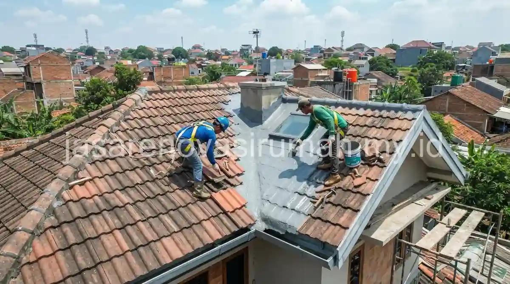
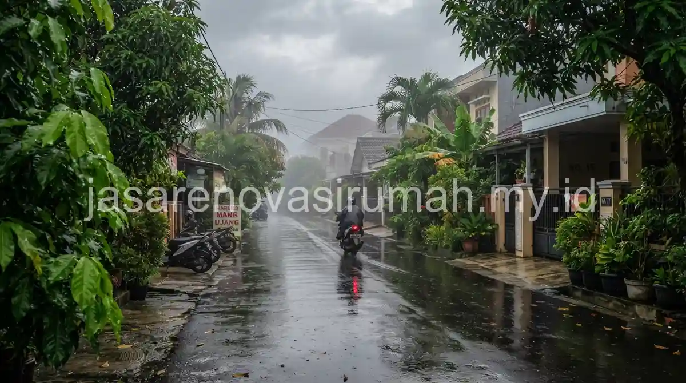

Jasa renovasi rumah Depok yang berpengalaman memahami karakter cuaca lembab dan curah hujan tinggi di kawasan tersebut, sehingga penanganan atap bocor dilakukan secara menyeluruh mulai dari pengecekan waterproofing hingga sistem talang air, bukan sekadar menambal titik yang terlihat basah.
Kondisi cuaca yang lembap dalam jangka panjang bisa mempercepat kerusakan material atap jika tidak ditangani dengan metode yang tepat sejak awal.
Mengapa Rumah di Kawasan Depok Rentan Mengalami Kebocoran Atap?
Curah hujan yang cukup tinggi dan kelembapan udara di kawasan Depok membuat material atap dan waterproofing lebih cepat mengalami penurunan kualitas dibanding daerah dengan iklim lebih kering.
Beberapa faktor yang membuat rumah di Depok lebih rentan bocor:
- Genangan air pada dak beton yang tidak memiliki kemiringan drainase memadai.
- Pertumbuhan lumut pada permukaan atap yang lembap secara terus-menerus, mempercepat keretakan material.
- Talang air yang cepat tersumbat oleh dedaunan akibat kawasan yang masih cukup banyak pepohonan.
- Usia lapisan waterproofing yang sudah melewati masa pakai optimal namun belum diperbarui.
Apa Saja Tanda Jasa Renovasi Rumah Depok yang Terpercaya?
Jasa renovasi yang terpercaya di kawasan Depok biasanya memiliki pengalaman menangani kasus kebocoran akibat cuaca lembap, bukan hanya renovasi estetika semata.
Beberapa indikator yang bisa dicek sebelum menunjuk kontraktor renovasi di Depok:
- Bersedia melakukan pengecekan menyeluruh pada sistem drainase atap, bukan hanya menambal titik bocor yang terlihat.
- Menggunakan material waterproofing dengan spesifikasi sesuai kondisi cuaca lembap, bukan sekadar produk termurah.
- Memberikan garansi tertulis untuk pekerjaan perbaikan atap dan waterproofing.
- Memiliki rekam jejak proyek renovasi di kawasan dengan karakter cuaca serupa.
Bagi pemilik rumah yang ingin memahami cakupan pekerjaan lain di luar perbaikan atap, referensi umum mengenai jasa renovasi bangunan juga bisa membantu memetakan skala renovasi yang dibutuhkan, baik untuk perbaikan ringan maupun yang lebih menyeluruh.
Bagaimana Proses Perbaikan Atap Bocor Akibat Cuaca Lembab Dilakukan?
Proses perbaikan yang tepat dimulai dari identifikasi sumber kebocoran, pembersihan area yang terdampak lumut atau jamur, hingga aplikasi ulang lapisan waterproofing yang sesuai kondisi cuaca setempat.

Tahapan umum perbaikan atap bocor akibat cuaca lembap:
- Survey lokasi untuk mengidentifikasi titik dan sumber kebocoran secara menyeluruh.
- Pembersihan area atap dari lumut, jamur, atau kotoran yang menghambat aliran air.
- Perbaikan atau penggantian sistem talang air jika ditemukan penyumbatan atau kerusakan.
- Aplikasi ulang lapisan waterproofing dengan material yang sesuai untuk kondisi lembap jangka panjang.
- Pengecekan ulang setelah hujan turun untuk memastikan tidak ada rembesan yang tersisa.
Penanganan yang menyeluruh seperti ini penting dilakukan agar masalah kebocoran tidak berulang dalam waktu dekat, mengingat kondisi cuaca lembap di kawasan Depok cenderung konsisten sepanjang tahun.
Kesalahan Umum Saat Menangani Atap Bocor di Kawasan Lembab
Kesalahan yang paling sering terjadi adalah hanya menambal titik yang terlihat basah tanpa memeriksa kondisi keseluruhan sistem drainase atap, sehingga kebocoran muncul kembali di titik lain dalam waktu singkat.
Kesalahan lain yang perlu dihindari:
- Menggunakan material waterproofing yang tidak sesuai untuk kondisi cuaca lembap dan curah hujan tinggi.
- Mengabaikan pembersihan lumut secara berkala pada permukaan atap yang rentan lembap.
- Menunda perbaikan meski kebocoran masih terlihat kecil, padahal air yang merembes lama bisa merusak struktur plafon.
Pada akhirnya, mengatasi kebocoran atap di kawasan dengan cuaca lembap seperti Depok membutuhkan penanganan yang menyeluruh, bukan sekadar tambal sulam sesaat. Tim jasa renovasi rumah kami siap membantu melakukan survey dan perbaikan menyeluruh, dan Anda bisa mempelajari lebih lanjut layanan renovasi kami sebelum memulai konsultasi.